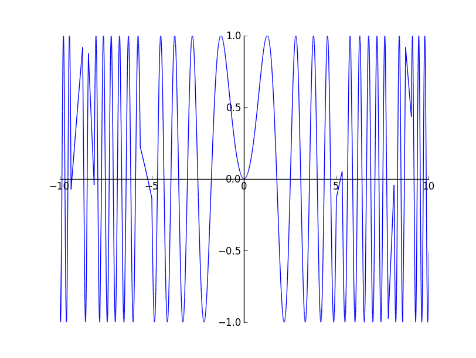
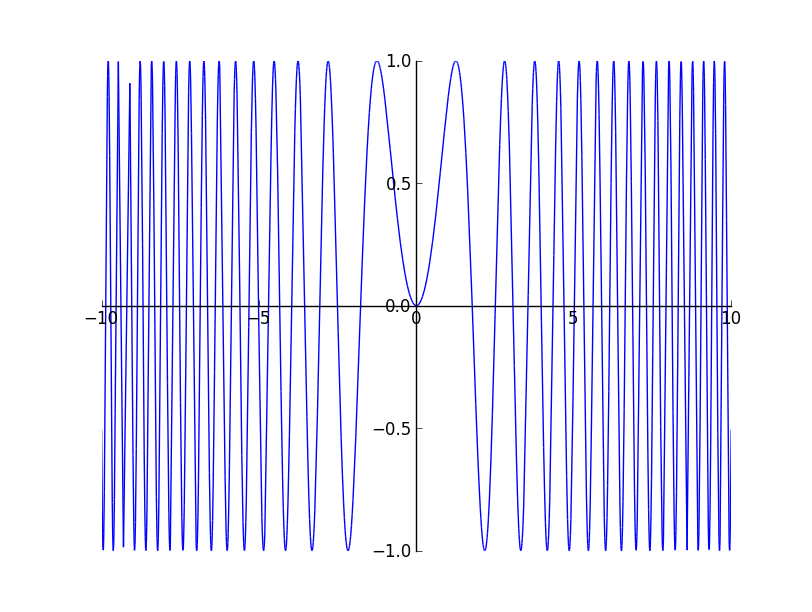

This was my first week of GSoC and I spent time on experimenting with adaptive sampling. The major idea explored were what constitutes a condition for which we need not sample more to obtain an accurate plot. I started with the idea of the area of the triangle formed by the three consecutive points to be less than a tolerance value. This worked nicely but did oversampling unnecessarily. The problem with it was the area of the triangle was dependent on the distance between the points which made the condition dependent on the lengths and hence oversampled even though the line formed by the three points was almost collinear. So the obvious next idea was to check the angle formed by the three points and see whether it forms an angle near to 180 degree. There were three versions of the above algorithm implemented, out of which one was the iterative version of a recursive solution. The iterative version is here. Considering Stefan Krastanov's suggestion, I implemented a recursive solution which samples 5 additional points between two points instead of a single point. The idea was to use numpy's quick evaluations of an array and also arrive at the straight line condition faster. Also, this reuses most of the code written before. The code for the following can be found here. The snippet of the code is as follows:
def get_adapt_segments(self): f = vectorized_lambdify([self.var], self.expr) list_segments = [] def sample(segment, depth): if depth > 5: list_segments.append(segment) else: new_sampling = np.linspace(*segment[:, 0], num = 5) new_segments = self.get_segments((new_sampling, f(new_sampling))) for segmentA, segmentB in zip(new_segments[:-1], new_segments[1:]): if not flat(segmentA, segmentB): sample(segmentA, depth + 1) else: list_segments.append(segmentA) #sample the last segment if not flat(new_segments[-2], new_segments[-1]): sample(new_segments[-1], depth + 1) else: list_segments.append(new_segments[-1]) points = np.linspace(self.start, self.end, 16) yvalues = f(points) segments = self.get_segments((points, yvalues)) for segment in segments: sample(segment, 0) return list_segments def flat(segmentA, segmentB): vectorA = segmentA[0] - segmentA[1] vectorB = segmentB[1] - segmentB[0] costheta = np.dot(vectorA, vectorB) / (np.linalg.norm(vectorA) * np.linalg.norm(vectorB)) if abs(costheta + 1) < 0.0005: return True else: return False
The major problem with the above approach is the way that the rightmost point / segment is handled. The rightmost segment does not have another right segment to decide whether it forms a 180 degree angle or not. Hence it is assumed straight if the previous segment and the present segment forms a straight line. Most of the time this fails to sample further for the end segment thought it should have sampled. The problem can be seen in an plot of

The last method used is symmetric and gives better results, but it is quite ugly. The branch is here.(EDIT: changed the link). It uses some amount of random sampling to avoid aliased results. The plot of

I think I will get an non - ugly code ready by the tomorrow and wait for Stefan's branch to get merged before submitting this method as pull request. This week has been lots of experimentation. I think I will spend the next week getting a basic version of Interval Arithmetic ready using numpy.
Comments !